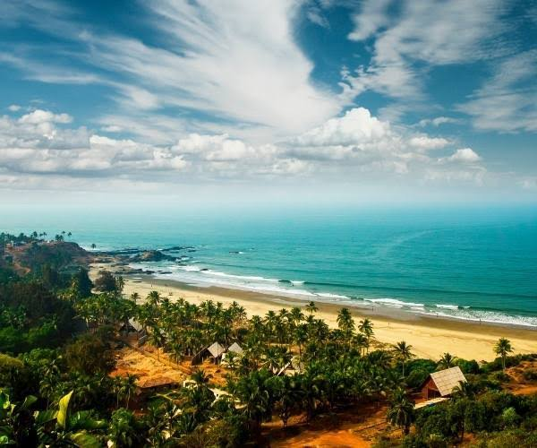

Konkani Cinema Explorer
Journey into the vibrant world of Konkani cinema, representing the cultural pulse of Goa and the Konkan coast. From Mogacho Aunddo (1950), the first Konkani feature film, to multiple National Award-winning masterpieces celebrating coastal heritage and storytelling.
From Mogacho Aunddo to Modern Regional Milestones
Konkani cinema traces its modern cinematic journey back to April 24, 1950, with the release of *Mogacho Aunddo* (Love's Craving), produced and directed by Jerry Braganza under the banner of Konkan Art Films. Released in Mapusa, Goa, it marked a historic milestone as the very first full-length Konkani feature film.
Rooted deeply in the rich socio-cultural fabric of Goa, coastal Karnataka, Maharashtra, and Kerala, Konkani films capture the essence of coastal life, music, folk traditions, and social narratives, gradually receiving international acclaim and sweeping National Film Awards.
🎞️ At a Glance
- First feature film: Mogacho Aunddo (1950), directed by Jerry Braganza.
- Cultural core: Goa and the wider Konkan linguistic belt.
- Key themes: Coastal heritage, tiatr traditions, social realism, and migration.
- Milestone: Multiple National Film Awards for Best Feature Film in Konkani.
Notable Films of Konkani Cinema
The landmark films that defined Konkani cinema's legacy, from its pioneering talkie to award-winning modern classics.
Mogacho Aunddo (1950)
Produced and directed by Jerry Braganza, this romantic drama holds the historic title of the first Konkani feature film.
Amchem Noxib (1963)
A massive commercial hit directed by A. Braz Fernandes that revitalized the Konkani film industry and popularized Goan music.
Nirmon (1966)
A critically acclaimed tragedy directed by A. Braz Fernandes that won the National Film Award for Best Feature Film in Konkani.
Aleesha (2004)
Directed by Rajendra Talak, this film brought contemporary issues and high technical production values into focus.
Paltadcho Munis (2009)
Directed by Laxmikant Shetgaonkar, it premiered at the Toronto International Film Festival and won international acclaim.
K Sera Sera (2016)
A gripping psychological drama starring veteran actor Pallavi Joshi that won the National Award for Best Feature Film in Konkani.
🏆 Visionaries & Pioneers
- Jerry Braganza: Pioneer filmmaker who produced and directed the first Konkani movie, *Mogacho Aunddo*.
- A. Braz Fernandes: Director behind landmark classics like *Amchem Noxib* and *Nirmon*.
- Rajendra Talak: Acclaimed director and National Award winner known for revitalizing modern Konkani cinema.
- Laxmikant Shetgaonkar: Internationally recognized filmmaker who brought Konkani stories to global film festivals.
Award-Winning Artists of Konkani Cinema
The journey of Konkani cinema has been championed by passionate artists, producers, and directors who fought against logistical challenges to bring stories in their mother tongue to the silver screen. Jerry Braganza took the courageous first step in 1950, opening doors for regional storytelling.
In subsequent decades, filmmakers like A. Braz Fernandes connected deeply with audiences through melodious music and emotional family dramas. Today, contemporary directors continue to place Konkani cinema on the global map through festival circuits, addressing environmental, social, and psychological themes.
Chronology of Konkani Cinema
From humble beginnings in Mapusa to international film festivals.
The First Feature Film
Jerry Braganza releases *Mogacho Aunddo*, marking the birth of Konkani feature filmmaking.
The Golden Era Begins
The release of blockbusters like *Amchem Noxib* and *Nirmon* establishes Konkani cinema as a powerful cultural force.
Government Support & Tiatr Influence
State government grants and subsidies help sustain production, drawing heavy creative inspiration from traditional Goan *Tiatr* theatre.
Modern Revival
Films like Rajendra Talak's *Aleesha* introduce high-end technical standards and contemporary urban perspectives.
International Recognition
Laxmikant Shetgaonkar's *Paltadcho Munis* garners international critical acclaim at major global film festivals.
Global & Festival Expansion
Konkani films continue to win national honors, exploring diverse storytelling across global digital and festival platforms.
Reels, Coastlines & Cinematic Heritage
Visual impressions capturing the coastal beauty and cinematic journey of Konkani culture.



📚 References & Further Reading
- Wikipedia. Konkani Cinema — History, Origins and Evolution.
- Goa Tourism Development Corporation. Cultural Heritage and Cinema of Goa.
- Entertainment Society of Goa (ESG). Archives of Konkani Feature Films.
- National Film Archive of India (NFAI). Preservation of Regional Indian Cinema.